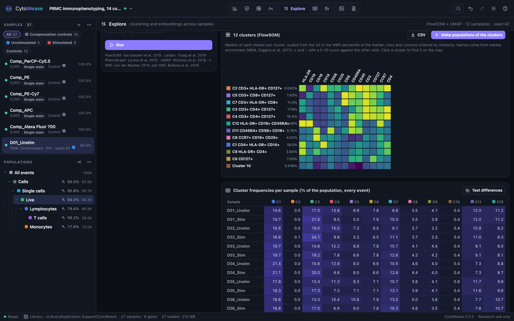
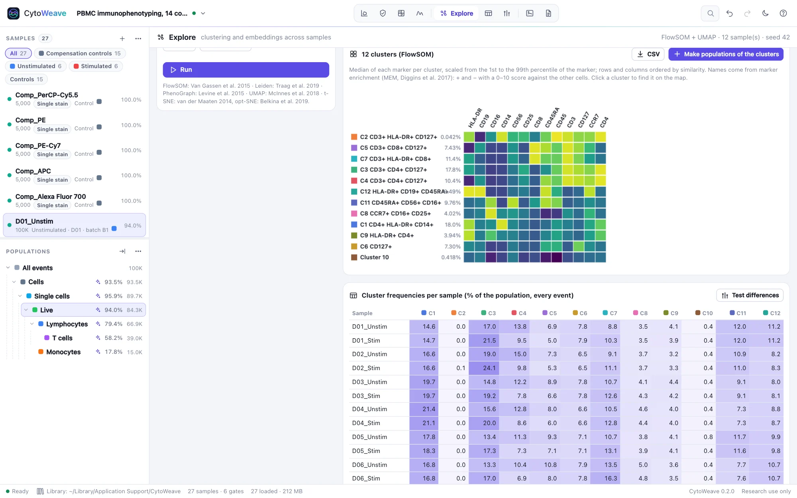
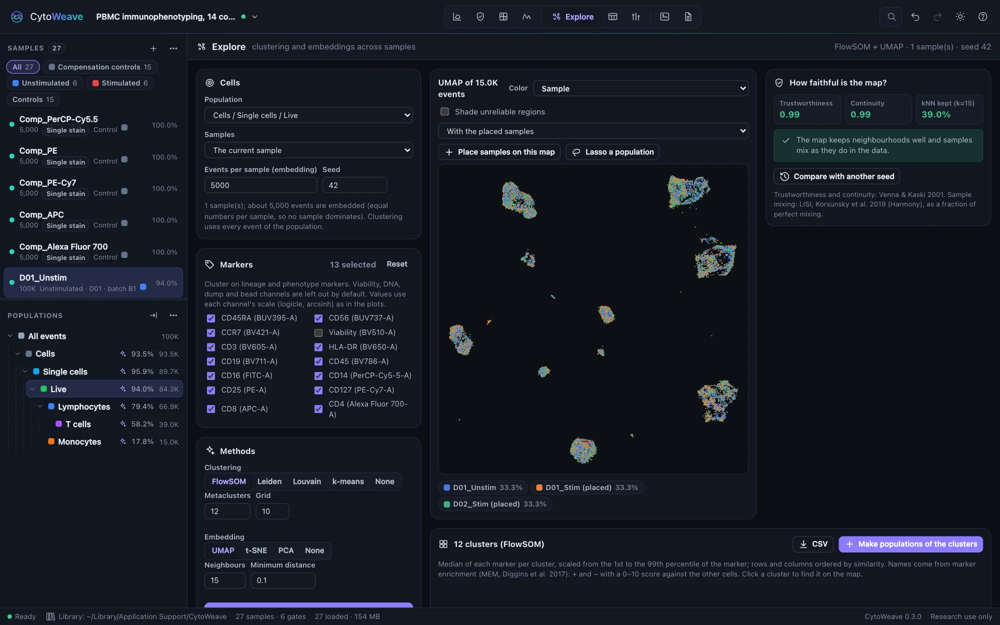
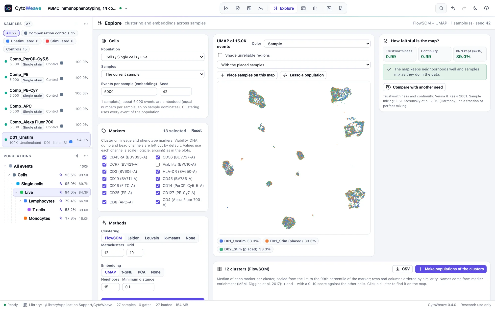

Clustering and maps
Cluster a population across samples, look at it as a map, and find out how far the map can be trusted before you read anything into it.
Running an analysis


- Cells. Choose the Population (usually live single cells, or a lineage such as T cells), the Samples (all samples except controls, a group, or the current sample), the Events per sample to embed and the Seed. The map embeds an equal number of events from each sample, so no sample dominates; clustering uses every event of the population.
- Markers. Lineage and phenotype markers are chosen for you; viability, DNA, dump and bead channels are left out. Values use each channel's scale (logicle, arcsinh) as in the plots.
- Methods. Choose a clustering, an embedding, or both:
- FlowSOM: a self-organizing map of grid × grid nodes (10 × 10 by default), metaclustered by consensus clustering into the number of Metaclusters you choose.
- Leiden (as in PhenoGraph) or Louvain: community detection on a nearest-neighbor graph; Resolution sets how finely it splits.
- k-means (k-means++ seeding, Hamerly's algorithm).
- UMAP (Neighbors, 15 by default, favors global structure as it grows; Minimum distance, 0.1, sets how tightly points pack), t-SNE (Perplexity, 30 by default, with opt-SNE's learning rate), or PCA.
- Click Run. Large analyses run in background workers; the same seed always gives the same result.
Color the map by cluster, density, sample, any annotation or any marker, and click a legend entry to highlight it (⌥-click hides it). In the examples, Simulated truth colors by each event's true cell type.
How faithful is the map?
A UMAP or t-SNE map always looks convincing. The panel on the right measures what the picture cannot show:
| Measure | Question |
|---|---|
| Trustworthiness | Are neighbors on the map true neighbors in marker space? (Venna and Kaski; 1 is perfect) |
| Continuity | Do true neighbors stay together on the map? |
| kNN kept | The share of each event's 15 nearest neighbors that stay among its nearest on the map. A strict test: t-SNE and UMAP usually keep a minority, because among similar cells the very nearest are largely noise. |
| Sample mixing on the map and in the data | LISI (Korsunsky et al.), as a fraction of perfect mixing. If samples mix less on the map than in the data, the map is separating samples that the data do not. |
| Compare with another seed | The share of neighbors shared between two runs, and how much the arrangement changed (Procrustes) |
| Shade unreliable regions | Dims events whose map neighbors mostly come from elsewhere in the data |
Each result comes with a plain-language reading, such as "Islands are meaningful, the arrangement of events within them is not."
Clusters


- The heatmap shows each cluster's median of every marker, scaled from the 1st to the 99th percentile, with rows and columns ordered by similarity. Click a cluster to find it on the map.
- Clusters are named from their marker enrichment (MEM, Diggins et al.): "C3 CD3+ CD4+ CD127+".
- Cluster frequencies per sample lists each cluster as a percentage of the population in every sample. Test differences takes them to Compare.
- Make populations of the clusters adds one gate per cluster under the population, so clusters get plots, statistics and figures like gated populations. CSV exports the cluster table.
- Lasso a population draws around cells on the map to make a population of them.
Placing new samples on a map


A UMAP changes every time it is recomputed, which makes it hard to compare samples acquired later. Place samples on this map positions other samples' events on a finished UMAP without changing it (the UMAP transform). Choose the samples, click Place, and select With the placed samples to see them with the original ones. A placed sample whose cells land outside the islands holds cells the map was not built from.